C) Úhrnná plodnost a ukazatele reprodukceÚloha 1 · 4 b
Logika v kostce
Logika: pro každou věkovou skupinu spočítáš specifickou míru plodnosti fx = narození ÷ ženy. Úhrnná plodnost je jejich součet (násobený šířkou skupiny h): kolik dětí by se narodilo jedné ženě, kdyby celý život platily dnešní míry a nikdo neumíral. Hrubé ukazatele z ní odvodí kolik z dětí jsou děvčata (δ = 0,485).
1 · Teorie a vzorce – přímo ze slidů
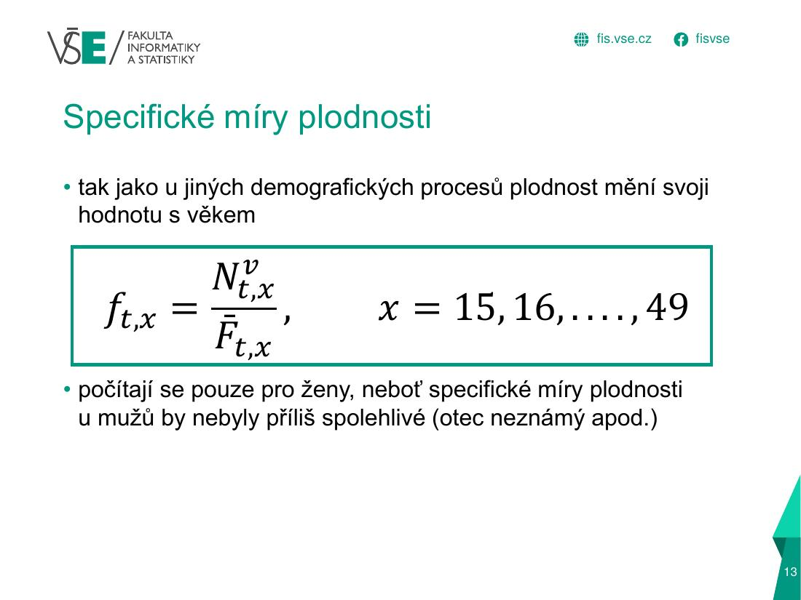

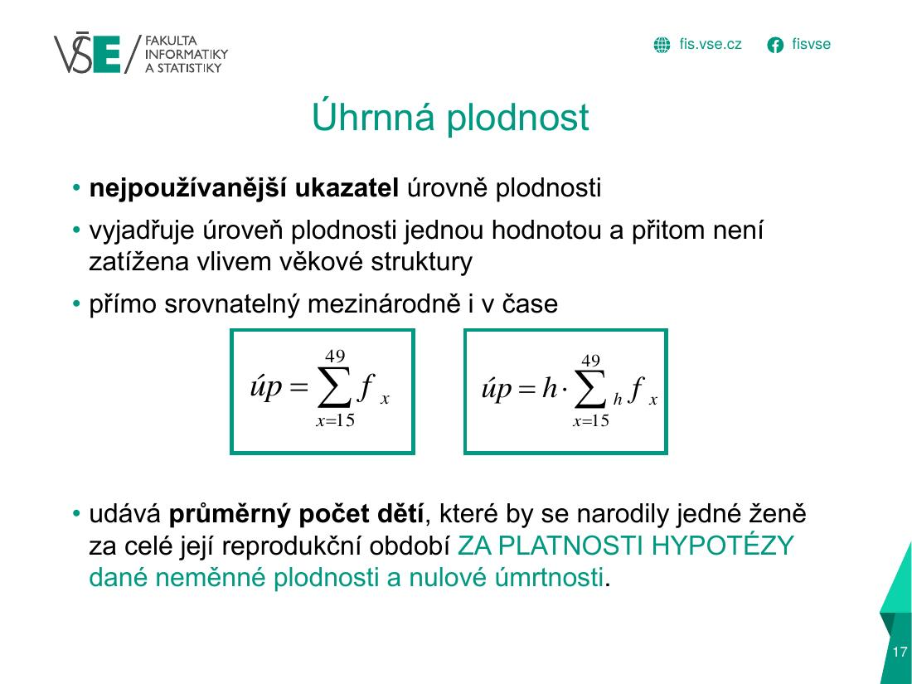
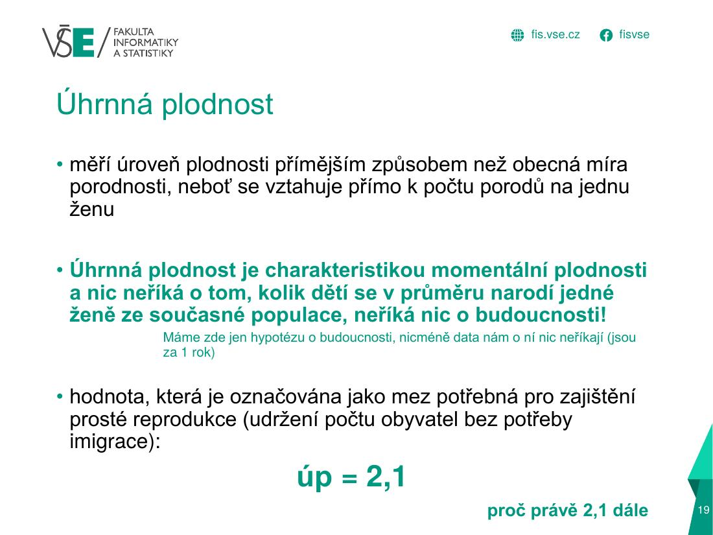
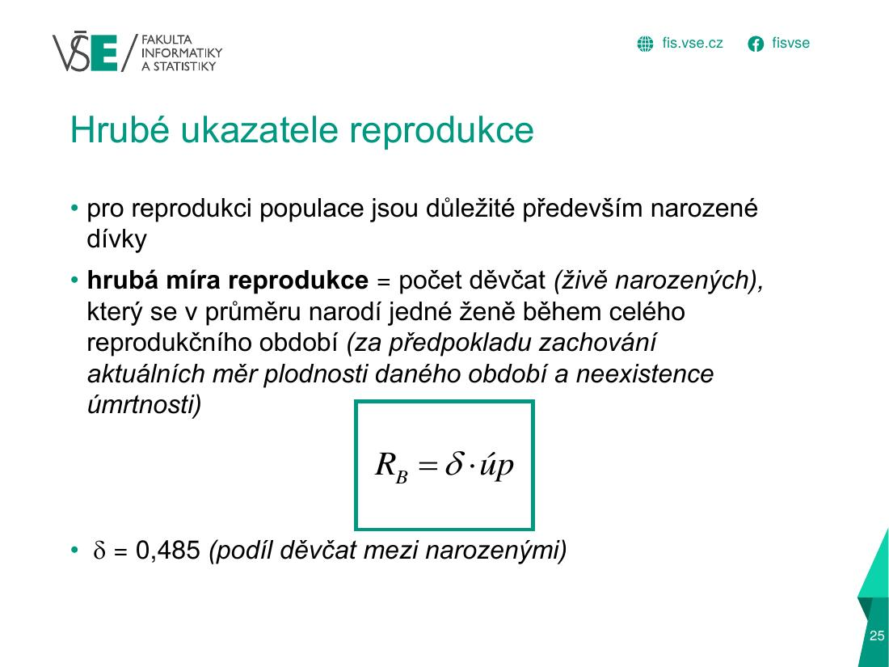
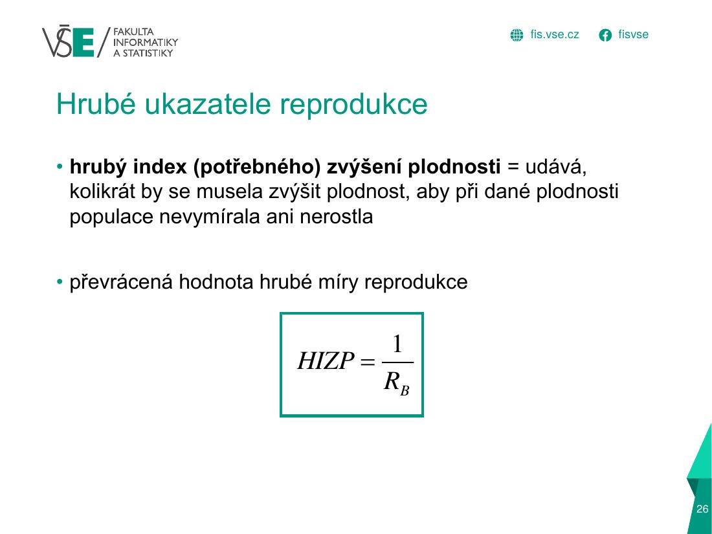
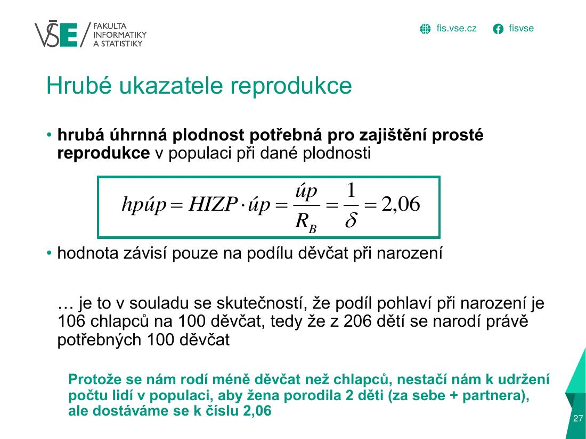
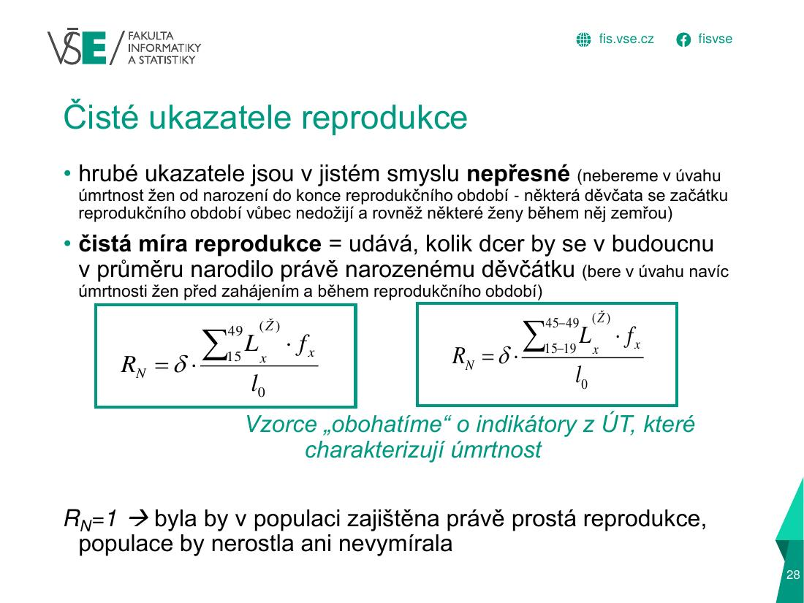
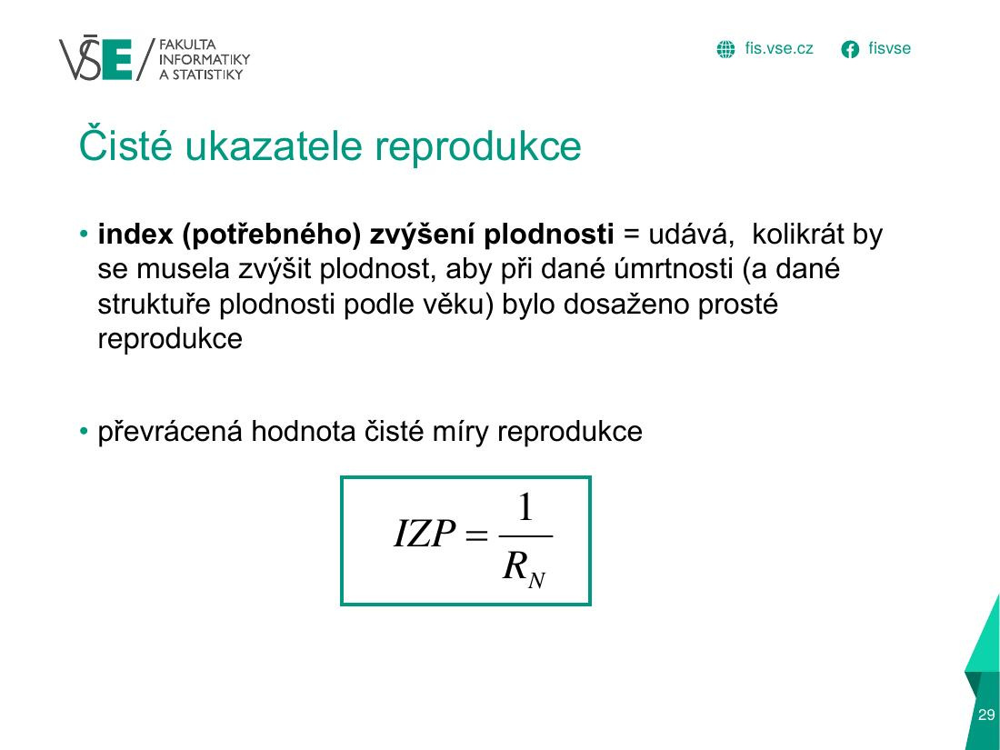
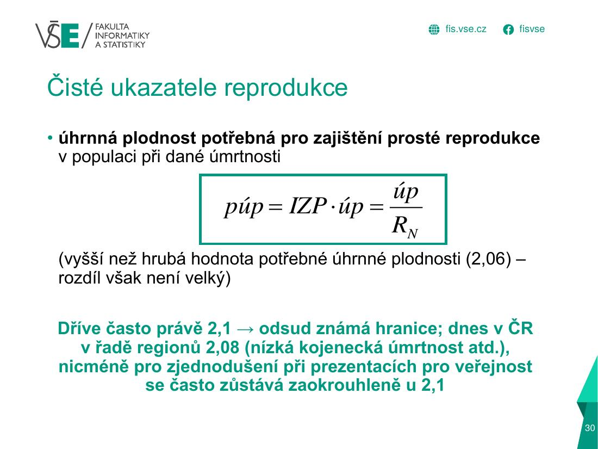
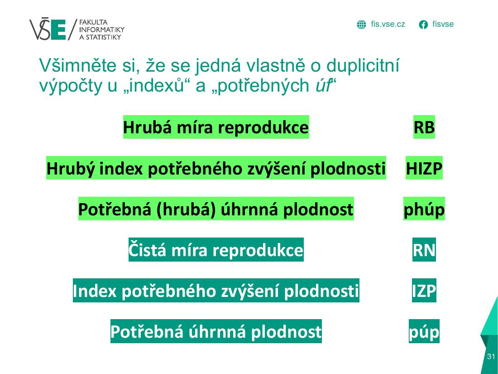
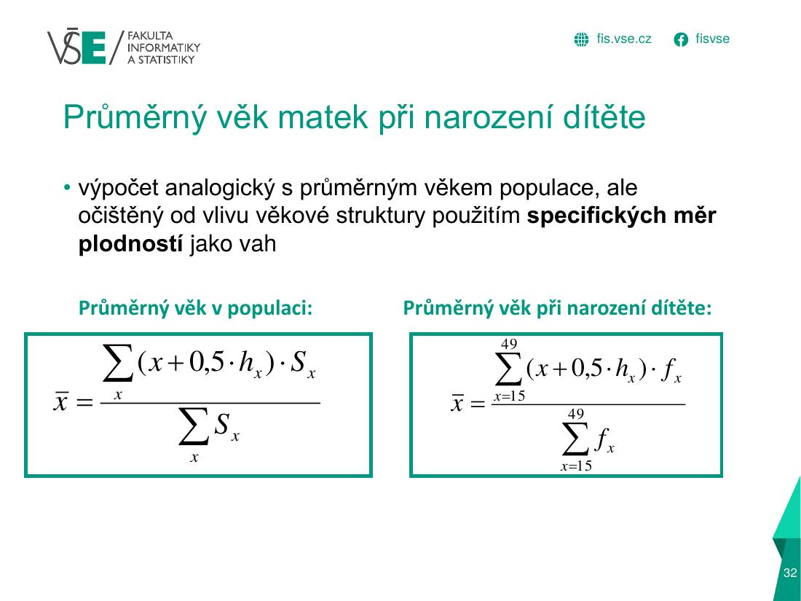
2 · Graficky: jak se to počítá
Specifické míry plodnosti fx podle věku matky
každý sloupec je široký h = 5 let, takže jeho plocha je h · f(x)
Úhrnná plodnost = součet ploch všech sloupců
úp=Σh·fx =Σh·NxFx
h
šířka věkové skupiny (5; u skupiny 40–49 je 10!)
fx
specifická míra plodnosti ve věku x
Nx
živě narozené děti matek tohoto věku
Fx
počet žen tohoto věku (střední stav)
úp
kolik dětí by se narodilo jedné ženě za život
úp = 5 · 0,36283 = 1,81
Postup krok za krokem
1
Specifická míra v každé skupině
fx=NxFx → 1 39228 783=0,04836
15–19 … 45–49
▼
2
Součet a vynásobení šířkou skupiny
Σ fx = 0,36283·5
úp = 1,81
▼
3
Hrubá míra reprodukce (děvčata, δ = 0,485)
RB=δ·úp=0,485 · 1,8141
RB = 0,88
▼
4
Index potřebného zvýšení plodnosti
HIZP=1RB=10,8799
HIZP = 1,14
▼
5
Potřebná úhrnná plodnost
phúp=úp·HIZP=1,8141 · 1,14
phúp = 2,06 (= 1/δ)
Interpretace – takhle ji napiš do testuÚhrnná plodnost 1,81 znamená, že by se jedné ženě narodilo průměrně 1,81 dítěte (při dnešních měrách a bez úmrtí). To je méně než 2,06 potřebných pro prostou reprodukci; plodnost by se musela zvýšit 1,14×.
Čisté ukazatele (když je zadáno RN)
IZP=1RN · púp=úp·IZP
RN
čistá míra reprodukce – bere v úvahu, že část dcer zemře dřív, než porodí (zadaná, nebo ze semestrálky)
IZP
kolikrát se musí plodnost zvýšit
púp
potřebná úhrnná plodnost (čistá)
3 · Jak to vypadá v Excelu (tvoje semestrální práce)
| A | B | C | D | E | F | G | H | I | J | |
|---|---|---|---|---|---|---|---|---|---|---|
| 74 | Věk | Dolní hranice věkového intervalu | Šířka věkového intervalu | Počty živě narozených | Počty žen k 1.7. | Specifické míry plodnosti | Počet prožitých let (ženy) | Počet živě narozených dětí (žená… | Charakteristický věk | Průměr |
| 75 | x | xd | hx | Nx | Fx | fx | Lx | Lx*fx | x+0,5*hx | (x+0,5*hx)*fx |
| 76 | 15-19 | 15 | 5 | 67 | 14 585 | 0,00459 | 497 919,79 | = | 17,5 | 0,08039 |
| 77 | 20-24 | 20 | 5 | 385 | 12 639 | 0,03046 | 497 270,30 | 22,5 | 0,68538 | |
| 78 | 25-29 | 25 | 5 | 1 120 | 12 623 | 0,08873 | 496 385,31 | 27,5 | 2,43999 | |
| 79 | 30-34 | 30 | 5 | 1 394 | 15 437 | 0,0903 | 495 091,97 | 32,5 | 2,93483 | |
| 80 | 35-39 | 35 | 5 | 671 | 16 599 | 0,04042 | 493 843,91 | 37,5 | 1,5159 | |
| 81 | 40-49 | 40 | 10 | 172 | 38 650 | 0,00445 | 980 831,03 | 45 | 0,20026 | |
| 82 | Celkem | X | X | 3 809 | 110 533 | X | X | 0 | X | 7,85676 |
modré písmo = vzorec · červené = chyba / nedodělané
- Nx = počet živě narozených podle věku matky (součty z listu živě narození podle věku matky), Fx = počet žen (střední stav =
D45…z tabulky žen). F76 =D76/E76specifická míra plodnosti; skupina 40–49 má šířku 10 (C81), protoE81 =D50+D51(ženy 40–44 + 45–49) aD81narození 40–49.I76 =B76+0,5*C76charakteristický věk,J76 =I76*F76, průměrný věk matky =J82/SUM(F76:F81).
| E | F | |
|---|---|---|
| 84 | f | |
| 85 | úp | 1,31704 |
| 86 | d | 0,485 |
| 87 | RB | 0,63877 |
| 88 | HIZP | 1,56552 |
| 89 | phúp | 2,06186 |
| 90 | RN | 0 |
| 91 | IZP | #DIV/0! |
| 92 | púp | #DIV/0! |
| 93 | x_ | 30,33979 |
modré písmo = vzorec · červené = chyba / nedodělané
F85 =SUMPRODUCT(F76:F81;C76:C81)= Σ h·fx (úhrnná plodnost 1,317) ·F87 =F85*F86hrubá míra reprodukce (δ = 0,485) ·F88 =1/F87HIZP ·F89 =F85*F88phúp = 2,06.- Čisté ukazatele:
F90 =H82/100000*F86(RN),F91 =1/F90(IZP),F92 =F85*F91(púp).
⚠ Nedodělané (H76:H81): sloupec „Lx·fx“ je prázdný (
Oprava: do H76 napiš
Po opravě vychází RN = 0,485 · Σ Lxfx / 100 000 = 0,633, IZP = 1/0,633 = 1,58 a púp = 1,317 · 1,58 = 2,08.
Interpretace: čistá míra reprodukce 0,63 < 1 → dcery by nenahradily generaci matek; plodnost by se musela zvýšit 1,58× (na 2,08 dítěte na ženu), aby populace sama sebe reprodukovala.
H76 = bez vzorce) → součet H82 = 0 → RN = 0 a IZP, púp hlásí #DIV/0!.Oprava: do H76 napiš
=G76*F76 a vyplň dolů až po H81 (G = Lx žen z úmrtnostní tabulky; u 40–49 jde o J50+J51).Po opravě vychází RN = 0,485 · Σ Lxfx / 100 000 = 0,633, IZP = 1/0,633 = 1,58 a púp = 1,317 · 1,58 = 2,08.
Interpretace: čistá míra reprodukce 0,63 < 1 → dcery by nenahradily generaci matek; plodnost by se musela zvýšit 1,58× (na 2,08 dítěte na ženu), aby populace sama sebe reprodukovala.
4 · Doplňující text, tabulky a časté chyby
Rozbalit textový výklad (pro kontrolu a opakování)
| Ukazatel | Vzorec |
|---|---|
| Specifická míra plodnosti | fx = Nx / Fx (F = ženy daného věku k 1. 7.) |
| Obecná míra plodnosti | f = ΣNx / ΣFx · 1000 (ženy 15–49) |
| Úhrnná plodnost | úp = Σ hx · fx (h = 5; poslední skupina 40–49 má h = 10!) |
| Hrubá míra reprodukce | RB = δ · úp, δ = 0,485 |
| Hrubý index potřebného zvýšení plodnosti | HIZP = 1 / RB |
| Potřebná (hrubá) úhrnná plodnost | phúp = HIZP · úp = úp / RB = 1/δ = 2,06 |
| Čistá míra reprodukce (bývá zadaná) | RN = δ · Σ h·fx · Lx/l0 |
| Index zvýšení plodnosti / potřebná úp | IZP = 1 / RN · púp = IZP · úp = úp / RN |
| Průměrný věk matek při porodu | x̄ = Σ (x+0,5h)·fx / Σ fx |
Vyřešený příklad – ukazatele reprodukce (příklad „složitější“ č. 1)
| Věk | Živě narození Nx | Ženy Fx | fx = Nx/Fx |
|---|---|---|---|
| 15–19 | 230 | 31 675 | 0,00726 |
| 20–24 | 1 392 | 28 783 | 0,04836 |
| 25–29 | 4 306 | 37 609 | 0,11449 |
| 30–34 | 5 100 | 44 673 | 0,11416 |
| 35–39 | 2 750 | 50 738 | 0,05420 |
| 40–44 | 801 | 63 074 | 0,01270 |
| 45–49 | 659 | 56 580 | 0,01165 |
| Celkem | 15 238 | 313 132 | 0,36283 |
f (obecná) = 15 238 / 313 132 · 1000 = 48,66
úp = 5 · 0,36283 = 1,81
RB = 0,485 · 1,8141 = 0,88
HIZP = 1 / 0,8799 = 1,14
phúp = 1,8141 / 0,8799 = 2,06
úp = 5 · 0,36283 = 1,81
RB = 0,485 · 1,8141 = 0,88
HIZP = 1 / 0,8799 = 1,14
phúp = 1,8141 / 0,8799 = 2,06
Interpretace: úhrnná plodnost 1,81 znamená, že by se jedné ženě narodilo v průměru 1,81 dítěte (při dnešních měrách plodnosti a nulové úmrtnosti). To je méně než potřebných 2,06 pro prostou reprodukci. Plodnost by se musela zvýšit 1,14× (HIZP).
V testu může být zadaná čistá míra reprodukce RN a ty dopočteš IZP = 1/RN a púp = úp/RN (viz vzorce). Poslední skupina může být 40–49 (h = 10).